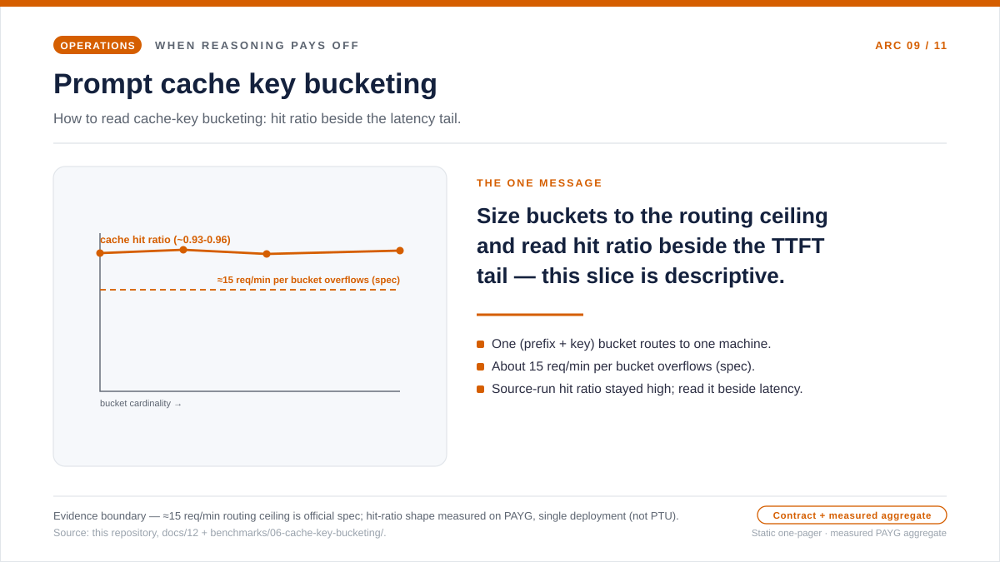
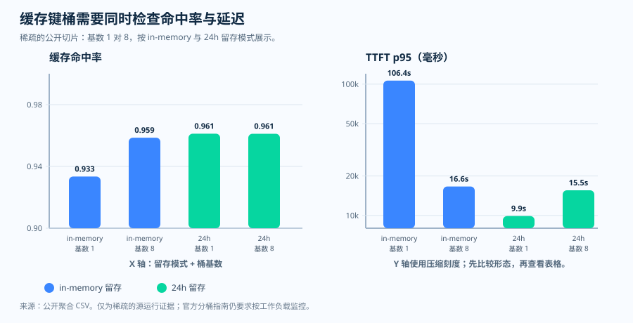

运维随笔 · 提示缓存与路由提示
缓存键是路由提示，而非标签
当团队接好 prompt_cache_key 时，很容易像对待其他标签一样对待它。
自然的反射，是往里塞能唯一标识一次调用的东西——request_id、用户的
问题文本、时间戳，或者足够细的按租户、按用户的维度。但这个字段更偏运维，而
不只是标签：它会与提示的前缀哈希结合，影响匹配工作被路由到哪里。所以"想把键
弄得独一无二"的本能，正面撞上本文要问的运维问题——更唯一的键究竟是聚拢了
复用，还是把共享前缀本想挣得的缓存局部性打成了碎片？
prompt_cache_key，会把
重复的工作路由到同一台机器上。而 Microsoft Learn 记录了一个经验值——每个桶
每分钟约 15 个请求——超过它，缓存有效性可能下降。这张单页概览传达的就是这一条
信息：把每个桶都缩放到这个有文档记载的上限之下，并标明边界。上限是官方规范；
与它并排的命中率和延迟形态，则是按量付费下测得、经脱敏的公开聚合，仅作描述。
打开缓存键分桶的单页概览 SVG。

为什么要给键做容量规划，而不是靠猜
"唯一键"的反射假设独特性是免费的——细粒度的键只会帮你区分请求。在接受这个
假设之前，值得把两件事并排放一下。第一件是 Microsoft Learn 记录的：提示缓存
要被命中，需要相同的早期前缀，而 prompt_cache_key 会与前缀哈希结合，
引导重复的工作落到哪里。同一份文档给出一个经验值——一个前缀＋键的组合每分钟约
15 个请求——超过它，流量会溢出到额外的机器，缓存有效性可能下降。第二件是本仓库
源运行里取出的、稀疏且经脱敏的公开聚合，用来描述当把同一个前缀拆进更多桶时，
缓存命中率和首 token 延迟实际是怎么动的。
值得停下来的，正是那个"成对"的部分。只看命中率会让人安心，但底下的体验在动。 在这类场景里，桶的基数上升了，命中率却保持高位、大体持平，所以单看它，会以为 分桶零成本。首 token 延迟的长尾，讲了另一半故事——一个过热的桶背着非常大的 p95，而当流量铺到更多桶上时，p95 又骤然下降。所以运维上的问题不是"缓存有没有 命中"，而是"每个桶的大小，能不能让前缀保住局部性、同时又不让某一个桶过热"。 前缀哈希路由和每分钟约 15 个请求的大致溢出点，是 Microsoft Learn 记录的；分桶 数量的计算，以及挨着延迟摆放的公开命中率测量，则是本仓库愿意为之背书的运维 推断与源运行证据，而不是一条通用的缓存命中曲线。下面的图把这一对明示出来。
问题
一个共享提示前缀应该使用多少个缓存键分桶？
证据
Microsoft Learn 定义了路由提示和大致的溢出临界点；本仓库补充了稀疏的公开测量。
决策
按工作负载分桶，让每个桶的速率保持在风险区以下，并同时监控命中率与首字延迟。
官方行为 · 这个键改变了什么
缓存从完全相同的前缀开始
Microsoft Learn 指出，提示缓存至少需要 1,024 个输入 token， 且前 1,024 个 token 必须完全相同。初始前缀会被哈希用于路由， 在前 1,024 个 token 之后，额外的缓存匹配以 128-token 为步长发生。 前 1,024 个 token 内哪怕只有一个字符不同，都可能让缓存命中变成未命中。
前缀优先
把重复的指令、模式、工具和示例放在前面。如果前缀会变化，靠后的复用就没那么有用。
键其次
prompt_cache_key 会与前缀哈希结合，影响重复工作的路由。
永不保证
键能提高复用的概率；它并不承诺命中。请把它当作一个运维提示来对待。
容量规划 · 让分桶保持在风险区以下
一个桶可能太热；太多桶又可能太冷
Microsoft Learn 描述了一个大致的溢出临界点：当相同前缀加上
prompt_cache_key 的组合每分钟超过约 15 个请求时，
部分请求可能被路由到额外的机器上，缓存有效性可能下降。
实用的容量规划规则是：把一个共享前缀拆分成足够多的稳定分桶，
使每个桶都留有余量地保持在该风险区以下。
分桶数量规则
common_prefix_rpm = common_prefix_tps × 60
minimum_buckets = ceil(common_prefix_rpm / 15)
recommended_buckets = ceil(common_prefix_rpm / target_rpm_per_bucket)
计算示例
在 1.4 TPS 时，公共前缀的速率为 84 RPM。15-RPM 下限给出 6 个桶；10-RPM 目标给出 9 个桶。
为什么不是一个？
即使可见的提示看起来稳定，单个热桶也可能让本地缓存路径溢出。
为什么不是唯一？
每次调用使用唯一键会阻止复用的累积。缓存永远聚不起人气。
观测证据 · 稀疏的公开测量
把命中率和延迟一起测

in_memory 与 24h，各 N = 960
条记录。这是双序列折线图，不是频次直方图。
读法：在这个每桶速率较低的场景里，基数上升时命中率保持高位、
大体持平（约 0.93–0.96）。所以把前缀拆进更多桶，本身并没有在这里压垮命中率
——碎片化的代价不在这一面板，而出现在下一面板的延迟长尾里。
证据边界：在一个租户与区域、用按量付费的 gpt-5.2 测得的稀疏、
经脱敏公开聚合（不是 PTU）。仅作描述，不是通用的缓存命中曲线。
来源：取值来自本仓库的
results/cache-key-bucketing/cache_hit_ratio_vs_cardinality.csv
（源 CSV）。

in_memory 桶背着非常大的
p95（约 106,000 ms），当流量铺到 8 个桶时骤然下降（约 16,600 ms）；而
24h 序列自始至终都偏低——所以在这组测量里，分桶的代价落在延迟
长尾里，因此命中率必须挨着首 token 延迟读，而不能单看。
证据边界：按量付费 gpt-5.2 下同一批稀疏、经脱敏的公开聚合
（不是 PTU）。仅作描述，不是延迟保证。
来源：
results/cache-key-bucketing/ttft_p95_vs_cardinality.csv
（源 CSV）。

| 保留 | 基数 | 命中率 | TTFT p95 | 每桶 RPM |
|---|---|---|---|---|
| in-memory | 1 | 0.9334 | 106,389.96 ms | 30.65 |
| in-memory | 8 | 0.9586 | 16,623.66 ms | 4.00 |
| 24h | 1 | 0.9612 | 9,899.74 ms | 30.73 |
| 24h | 8 | 0.9612 | 15,549.08 ms | 4.00 |
这能证明什么，又不能证明什么
这组公开测量并不能证明一条通用的阈值曲线。但它确实 说明了为什么运维者不应只看命中率：保留模式、 分桶速率和首字延迟都会改变用户体验。
键设计 · 稳定的工作负载分桶
按工作负载分桶，而非按调用
好的键对于相同的工作负载应当是确定性的。坏的键包含 每次调用的熵。如果时间戳、UUID、随机后缀或唯一调用 token 进入了键，缓存键空间就会爆炸，前缀也就无法建立复用。
好
tenant:flow:locale:schema 把相同的代理、模式、区域设置和任务形态聚在一起。
坏
唯一 id、时间戳、随机 UUID 和原始用户问题会让每次调用都产生一个桶。
监控
跟踪每桶 RPM、缓存 token 占比和首字延迟。当流量形态变化时重新调整分桶。
来源与证据边界
Tier 1 — 服务契约（Microsoft Learn）。提示缓存的前缀规则、
按前缀哈希路由、128-token 步长的匹配、单字符的未命中、prompt_cache_key
的路由提示，以及每分钟约 15 个请求的溢出点，都记录在这里。
- [1] Prompt caching with Azure OpenAI — 定义了 1,024 token 的最小
要求和相同前缀的要求、初始前缀按哈希路由、前 1,024 token 之后每 128 token 一次的
相同前缀缓存匹配、单字符的缓存未命中、与前缀哈希结合并影响路由的
prompt_cache_key提示，以及相同前缀与键的请求溢出到额外机器、缓存 有效性下降的每分钟约 15 个请求临界点。来源：Microsoft Learn 文档（2026-06-04 访问）· 存档。
Tier 2 — 运维推断（本仓库）。分桶数量的计算和公开命中率测量， 不是 Learn 的规范，而是本仓库的运维推断与源运行证据。
- [2] 本仓库，
docs/12-prompt-cache-key-policy.md— 分桶容量规划的运维手册。它从有文档记载的约 15-RPM 数值推导出minimum_buckets = ceil(common_prefix_rpm / 15)；而recommended_buckets公式与默认每桶 10-RPM 的目标，则是本仓库的运维 推断，而非 Learn 规范。来源。 - [3] 本仓库，
results/cache-key-bucketing/cache_hit_ratio_vs_cardinality.csv— 命中率与首 token 延迟表背后那一份稀疏的公开聚合测量。它是源运行证据， 不是通用曲线。来源。
本文证明了什么、又没证明什么。它记录了截至访问日期 Microsoft Learn
明示的提示缓存契约——1,024 token 的前缀规则、按前缀哈希路由、prompt_cache_key
提示、每分钟约 15 个请求的溢出点——以及本仓库的容量规划经验法则：把共享前缀拆成
足够多的稳定桶，让每个桶都留有余量地停在那个点之下。分桶数量公式和公开命中率测量
是运维推断与源运行证据，而不是被保证的缓存命中曲线。它不证明存在一个在所有模型、
区域、流量形态下都一致成立的通用阈值。
实用准则
实用准则：让可缓存的前缀保持稳定，按工作负载分桶，使每个
prefix + prompt_cache_key 都留有余量地停在有文档记载的每分钟约 15 个
请求溢出点之下；缓存命中率不要单看，要挨着首 token 延迟一起读。
下一篇从"键怎么分桶"，转到"缓存该活多久"。